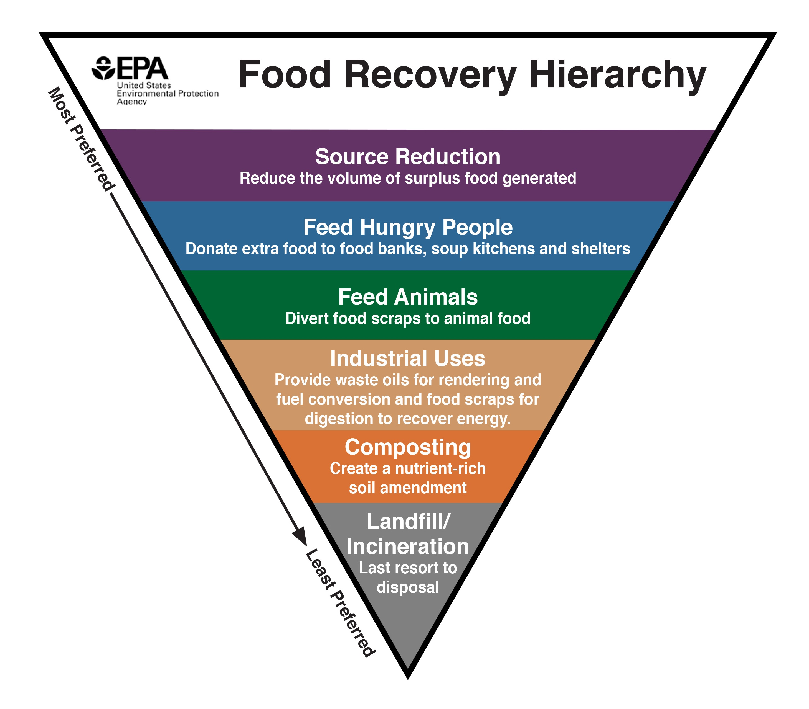
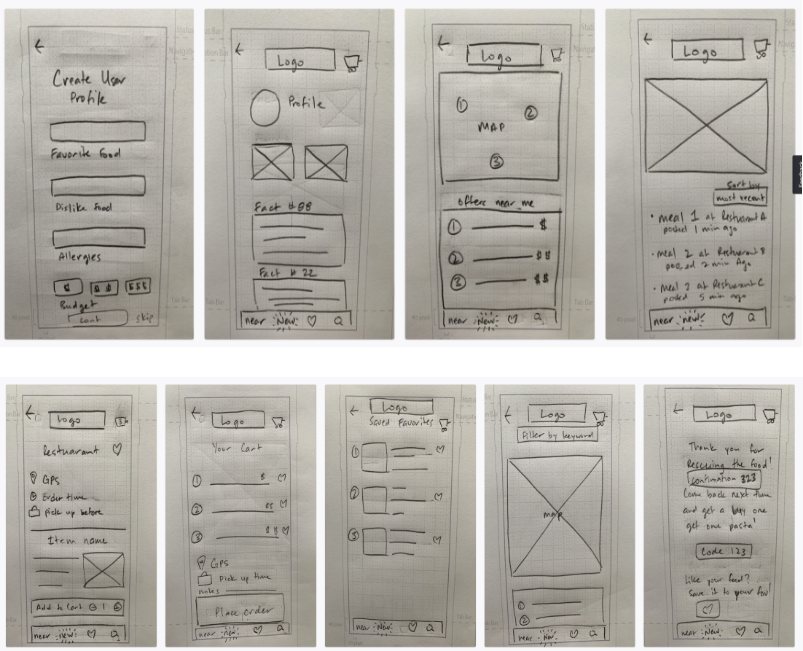
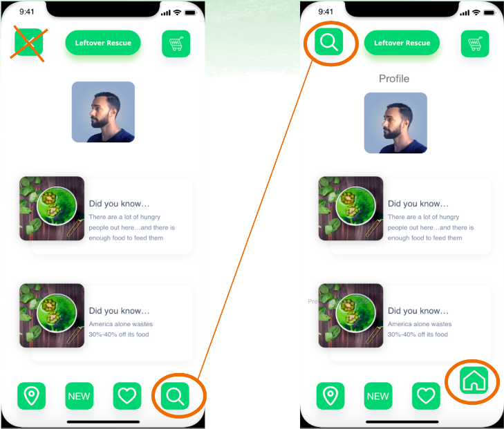

Hunger is an issue directly relating to food waste. Food shelters are a known to help feed people
Rather than connecting restaurants to other companies (food/shelters donations) Leftover Rescue wants to connect local restaurants directly to the person in need of a budget-friendly meal.

Each of our lo-fi sketches included coaching splash screens, multiple ways of logging in, two-factor authentication, and the choice to enable the user’s location.
During our testing we learned that testers do indeed find this app to be something they would use.
Again Our task for every tester was to: purchase a budget meal from a restaurant that is nearby (aka rescuing a meal)
We also want our users to return to the restaurant or if they like the food they ate, adding a restaurant as a favorite would help the process quicker when they use the app next time

Brand identity – have a specific voice: “Rescue” meal instead of “Purchase” or “Buy” meal
Creating a UI Style guide for standardization
Add rewards, let user know how much impact they are making
Develop restaurant side of Leftover Rescue
Expand to all major cities in US